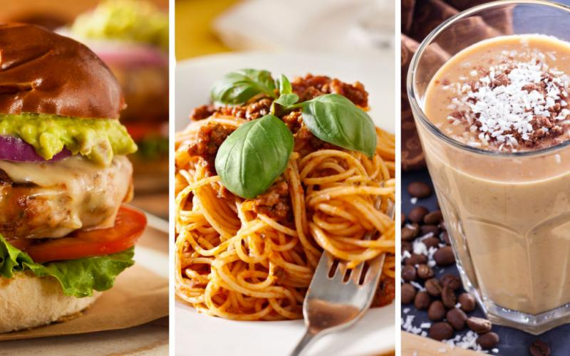

Best High Protein Recipes That Anyone Can Cook
High Protein Breakfast Recipes
1. Strawberry S'Mores Crepes with Chocolate Almond Butter
Some mornings call for breakfast that’s a little more like dessert. With these high protein crepes, you don’t have to give up on gains while you indulge your sweet tooth. Fresh strawberries, a few mini marshmallows, and chocolate almond butter make this sweet treat a fun weekend breakfast. Get the full recipe »
2. Sausage and Sweet Potato Breakfast Casserole
This massive breakfast casserole will last you all week. Filled with protein from eggs and sausage, it also gets a nutritious (and filling) boost from dark leafy greens, sweet potatoes, and coconut oil. Cook this up on a weekend and you won’t have to worry about your workday mornings. Get the full recipe »
3. Turkey and Sweet Potato Hash
There’s no savory weekend breakfast quite as decadent as a hash. This version calls for lean ground turkey and sweet potatoes to keep the macros in check. A nice sunny side up egg and a pinch of goat cheese would really take this one over the top! Get the full recipe »
High Protein Lunch Recipes
4. Chili Lime Salmon Salad
This summery salad will brighten any lunch. If you’ve been relying on boring fast food salads, the fresh flavors of this chili lime salmon salad will be a welcome relief. You can pre-dress the spinach or you can keep all the components separate for a meal-prep-ready lunch full of protein and omega-3s. Get the full recipe »
5. Simple Poached Egg and Avocado Toast
Here’s a fast, fresh lunch idea that will keep you full without causing a mid-day crash. Fresh herbs, shaved parmesan, and cherry tomatoes elevate this simple meal above typical lazy lunches. There’s even some pointers for perfecting your egg poaching technique. Get the full recipe »
High Protein Dinner Recipes
6. Clean Kung Pao Chicken
Sweet. Spicy. Delicious. Simple stir-frys are perfect for weeknight dinners. This one only dirties one pan and comes together in just a few minutes' prep time. Customize the spice level by adjusting the amount of chili paste and sriracha. Get the full recipe »
7. Roast Chicken Breasts with Garbanzo Beans, Tomatoes, and Paprika
Get ready to wow your guests with this deceptively simple protein-packed dinner. I’ve tested this with boneless breasts and it works just as well, so don't worry if that's all you have on hand. With whole cherry tomatoes and canned chickpeas, you’ll have this in the oven in no time. There's a bonus recipe included: shred any leftover chicken breasts for pita sandwiches the next day! Get the full recipe »